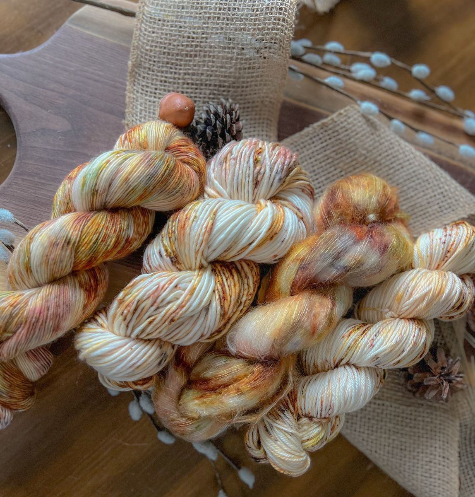
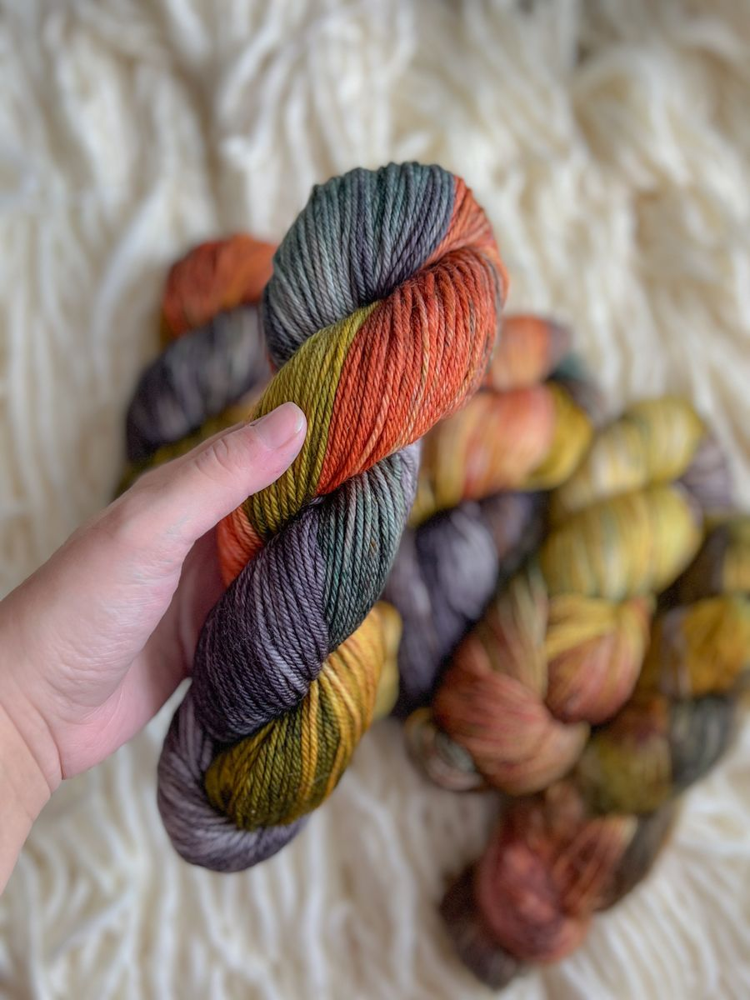
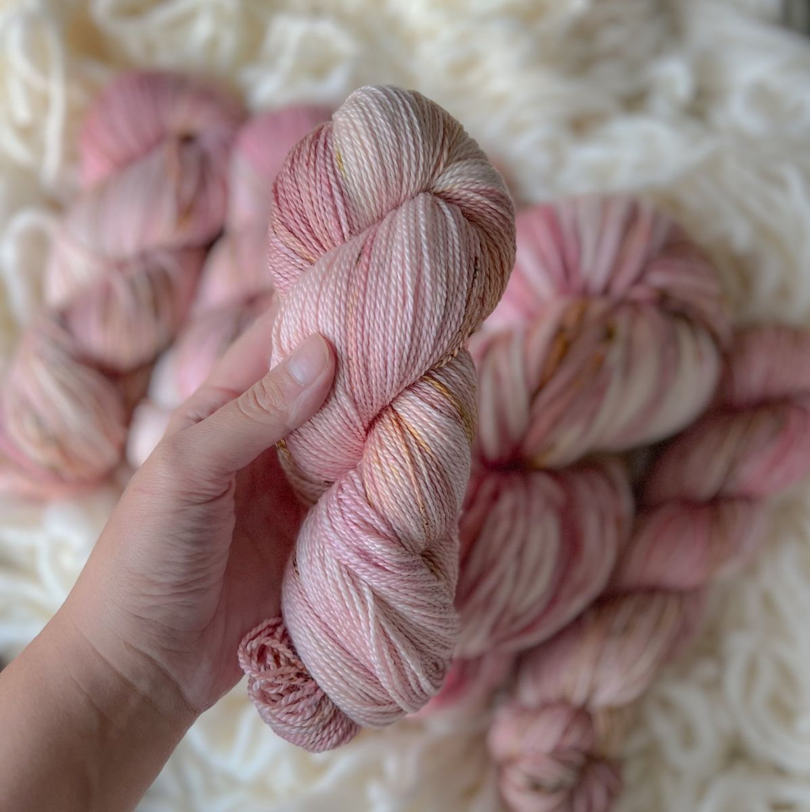
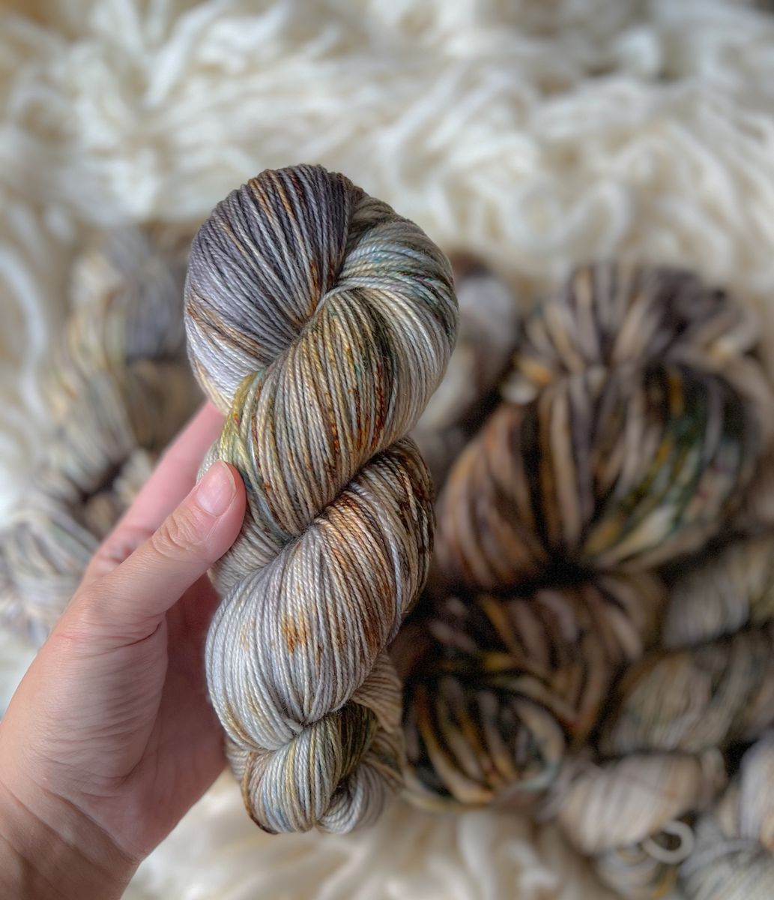

Forest Floor
From $28 CAD
Every named colourway is dyed in small runs. Click any skein to choose a yarn weight and add to your cart. If a favourite sells out we do our best to bring it back — but because each pot is a little different, "exact" is never guaranteed.
From $28 CAD

From $28 CAD

From $28 CAD

From $28 CAD

From $28 CAD

From $28 CAD

From $28 CAD

From $28 CAD
A small-batch run of one-of-a-kind hand-dyed sock kits, each dyed individually for its first owner. Pick a kit size, then choose the colour scheme that calls your name — once a scheme is full, that's it.

$44 CAD

$82 CAD

$120 CAD

$156 CAD
Every yarn we dye is named after a studio dog. From lace-light Bonnie to super-bulky Ellie, each base has its own personality — here's what they are, how they knit up, and what they're best for.
Not sure which base fits your pattern? Bring your pattern to us (or send it by email) and we'll match it to a yarn and colourway.